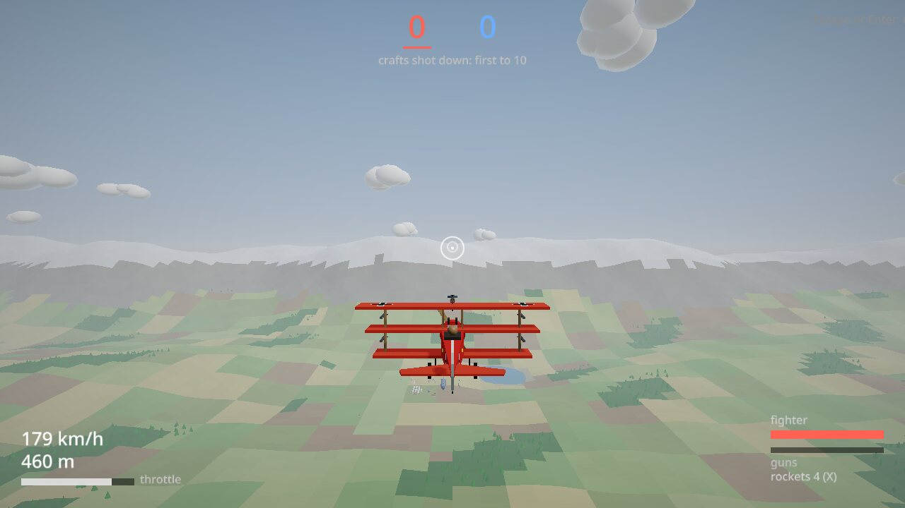

Multiplayer air combat · Play in your browser
Sky Barons
The Great War in the air, if the Great War had gone a little differently. Red and Blue each have an airfield full of scouts, fighters, bombers and zeppelins, plus a few stranger things: a rocket pack, a pedal-powered ornithopter, da Vinci's aerial screw.
You start on foot beside your side's parked planes. Walk to one, climb in and take off down the strip. When it goes wrong, bail out under a parachute. Or land, get out, and take another plane, even one of theirs: its colors fool their side until you start shooting. A bomber's guns are manned by your friends or by its crew.
Fights are dogfights, base attacks, capture the flag, and missions like a trench run up a gorge or escorting bombers to a factory. Up to 64 a side, with the computer flying whatever seats people don't. Make a room and send friends the link, play with anybody, or practice on your own.

It runs in the browser, keyboard and mouse or a gamepad. Phones get touch controls.